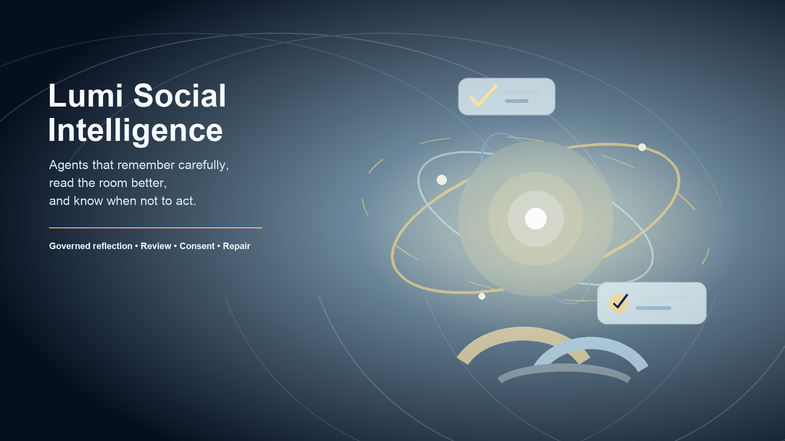

Chiang Mai, Thailand — July 10, 2026 — Lumi Social Intelligence today announced its first public release, v0.1.0, introducing a governed reflection layer for AI agents that combines adaptive memory, contextual nuance, and careful initiative with explicit review, consent, and repair.
Built around the promise “agents that remember carefully, read the room better, and know when not to act,” Lumi Social Intelligence is designed for agent runtimes that need more than raw memory storage or unrestricted personalization. It helps an assistant reason about what should be remembered, what a situation means, whether a signal is strong enough to adapt, and whether the right response is to speak, wait, ask, act, repair, or stay quiet.
“We are making the self-improvement loop something that is human-shaped.”
Unlike systems that silently rewrite an assistant’s behavior after every interaction, Lumi Social Intelligence treats self-improvement as a governed process. Proposed changes should be inspectable, confidence-scored, contradiction-aware, reviewable, and reversible. Agents should propose, explain, and ask before durable changes are promoted.
Lumi Social Intelligence brings together three product layers:
| Product | Role | Public promise |
|---|---|---|
| Lumi Layered Memory | Context and continuity | Useful continuity. Clean boundaries. Receipts. No silent rewrites. |
| Nuances | Contextual appraisal | Notice lightly. Invite clearly. Repair quickly. Leave room. |
| Presence | Governed initiative | Soft presence. Clean boundaries. Quick repair. No stealing the feeling. |
Together, these layers give AI assistants a safer path from observation to adaptation: memory captures continuity, Nuances evaluates meaning and consent signals, and Presence decides whether action is helpful, invasive, premature, or better left alone.
The v0.1.0 release includes:
The initial host-specific distribution is Lumi for Hermes, currently provided as a preview-only, review-card-based integration boundary. The preview is intentionally non-mutating: it does not read or write private runtime state, configuration, memories, scheduler internals, queues, chat metadata, or local profile machinery.
Lumi Social Intelligence is not a hidden profiling system, raw log dump, unrestricted personalization engine, or permission slip for unreviewed proactive behavior. The project’s public boundary is built around confidence scoring, contradiction handling, human approval before durable host-side changes, skill evaluation before generated procedures become durable, and explicit adapter packets instead of silent host memory replacement.
This release also keeps private research infrastructure separate. Autoresearch remains internal evidence and harness infrastructure, not a public product surface.
Lumi Social Intelligence v0.1.0 is available now on GitHub:
https://github.com/markoaamunkajo/lumi-social-intelligence
Release artifacts include:
lumi-social-intelligence-0.1.0.ziprelease-manifest.jsonSHA256SUMSCode is licensed under the MIT License. Documentation, specifications, examples, diagrams, written explanations, and other non-code project materials are licensed under CC BY 4.0, unless a file states otherwise.
Lumi Social Intelligence is a social intelligence layer for AI agents: adaptive memory, nuance, and presence with review, consent, and repair. It is the public release doorway for Lumi Layered Memory, Nuances, Presence, and the Lumi for Hermes preview, helping agent runtimes improve carefully without uncontrolled identity drift or hidden behavioral rewrites.
Press asset: press/lumi-social-intelligence-press-hero-16x9.png
SVG source: press/lumi-social-intelligence-press-hero.svg